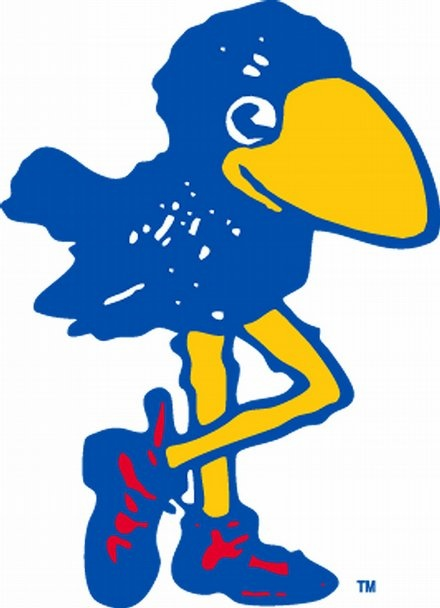

Welcome to my little website. This is mostly to keep public access to my projects, provide dev updates and blogging. Thanks for stopping by my drop in the internet


Who are you?: I'm Lucas Frias, a computer science major at the University of Kansas. I've been programming since I was about 7 and I love expirementing and learning. I have expirience in a lot of things, but I'm primarily a Python or C developer. More than that, I just love computers and working with them. This website is meant to be a place for this. I hope you enjoy taking a look!
In addition to computer science, I love literature, music, chess, and debate. I used to be a debate coach, and now work as a math tutor. I'm also fluent in Portuguese and can try to speak a couple other languages. I learned Latin throughout high school, and because of that I can read most Romance languages.